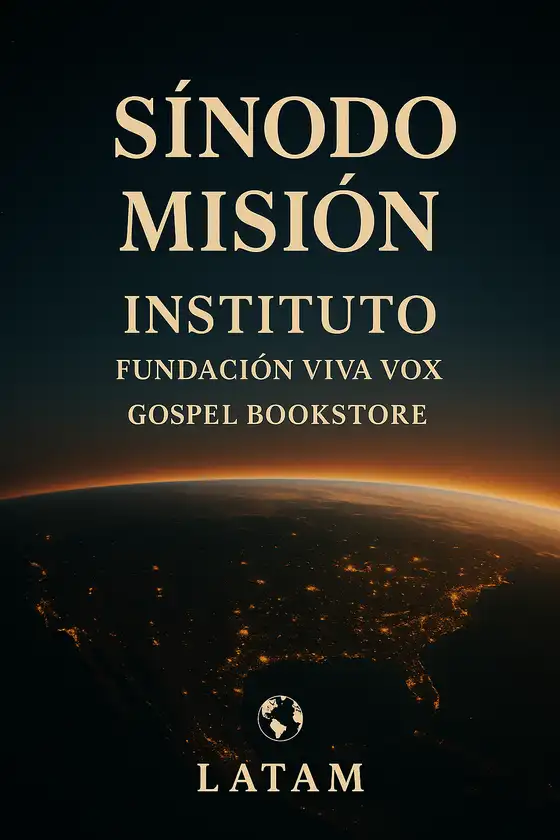
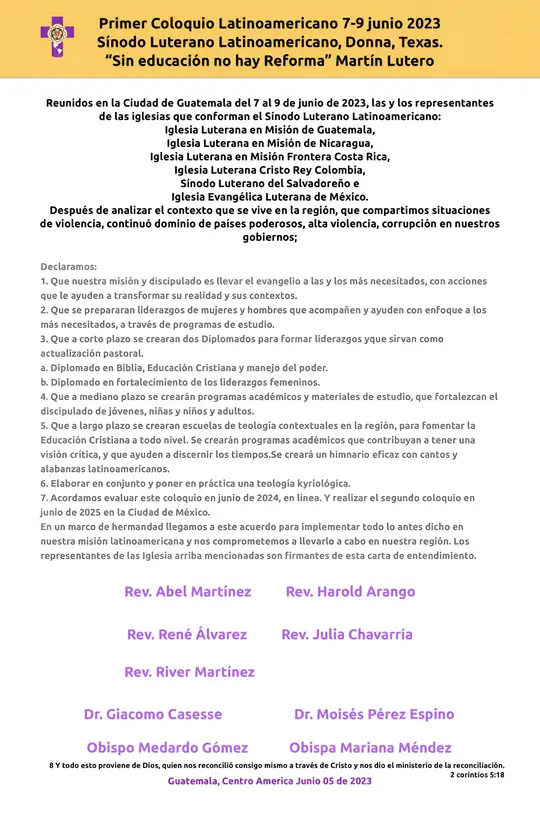
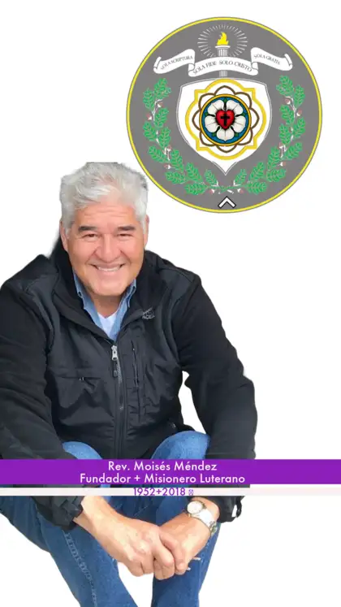
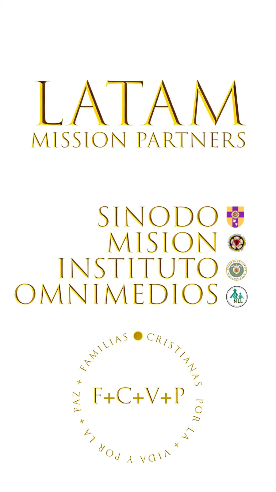

ᴸᴬᵀᴵᴺ ₊₁₉₃₆ ᴬᴹᴱᴿᴵᶜᴬᴺ · LUTHERAN MISSION
Nuestra historia
Del hilo a la aguja: llevar la enseñanza a donde es difícil llegar, cada vez con el medio que hay a la mano.

I · LA MISIÓN
- 1936Nace la Misión Luterana Latinoamericana (LALM): alcance integral a hispanohablantes en Estados Unidos y América Latina. De su trabajo de campo surge un modelo educativo y de iglesia que empieza en las casas.
II · EL INSTITUTO

- 1996El Rev. Moisés Méndez funda el Instituto Luterano Latinoamericano en Donna, Texas.
- 1999 · 12 ABRQueda registrado en Texas como corporación sin fines de lucro, de duración perpetua: el ministerio educativo de LALM.
- 2018Parte con el Señor el fundador. Su obra sigue en las familias, los líderes y las aulas que sembró.
III · TEOLOGÍA EN LÍNEA
- 2014–2020Trabajo de campo con IELMAR en el norte de México, la Sierra de Coahuila, la frontera sur de Texas y Centroamérica. Los programas de educación y alfabetización pasan al Instituto.
- ESTUDIOS DE VIDEOCONFERENCIAContenido en español, contextual y pensado para el celular.
- CURSOS ABIERTOS«El Libro de Concordia» (5 semanas), «Las 5 Solas: base para una reforma del siglo XXI» (5 semanas), «Mujeres de la Biblia» y «El llamado de la mujer al ministerio». Con el Pr. Jacobo Rodríguez (IELMAR), el Rev. Dr. Giacomo Cassese, el Prof. René Álvarez, los Revs. Abdiel y Elry Orozco, el Prof. Eric Milleti y la Rev. Mariana Méndez.
- BIBLIOTECA HISTÓRICAEl obispo Medardo Gómez, de El Salvador, comparte «Teología de la Vida». Cientos de estudiantes aprenden de un nominado al Nobel de la Paz.
- 2020Se constituye legalmente en Texas el Sínodo Luterano Latinoamericano, hermano del Instituto y de la Misión.
IV · IDENTIDAD LUTERANA LATAM
SÍNODOAsegura la comunión y la confesión de fe.
MISIÓNMoviliza a las familias y comunidades en vida y paz.
INSTITUTOForma a los líderes y maestros para sostener y multiplicar la obra.

V · PRIMER COLOQUIO LATINOAMERICANO
«Sin educación no hay Reforma» — Martín Lutero
- 2023 · 7–9 JUN · GUATEMALAIglesias de Guatemala, Nicaragua, Costa Rica (Frontera), Colombia (Cristo Rey), El Salvador y México declaran que la misión es llevar el Evangelio a los más necesitados. Acuerdan crear Diplomados para formar liderazgos (Biblia, Educación Cristiana y manejo del poder; fortalecimiento de los liderazgos femeninos), materiales para jóvenes, niñas y niños, escuelas de teología contextual y un himnario latinoamericano.

VI · ESCUELA DE TECNOLOGÍA
- 2024 · AGONace DIPLOMADO💻: «APRENDER&ENSEÑAR el uso de la IA en lugares difíciles de alcanzar». El Coloquio pidió Diplomados; aquí empieza uno. Primeros pasos: Poe, Suno y ElevenLabs.
- 2025 · MAR–ABRCurso ChatGPT y Curso de Redes con IA. Nace el himno «Desde Donde Estoy» de #eLearnLATAM.
- 2025 · JUL–SEPIntensivo Interciclo «Aplicando la IA a tu día a día profesional» y Módulo 3: MCP, Napkin y guías en HTML.
- 2026 · ENE–FEB#grandesmodelosdelenguaje: Ciencias de la Computación en la era de la Promptificación.
VII · SEDE DE AGENTES
- 2026 · OCT · L://COLOQUIOTres escuelas abiertas (OpenCourseWare) y una entrada con æQR: Escanear → Elegir escuela → Aprender → Construir → Publicar → Enseñar.
Del estudio de videoconferencia al celular, y del celular al agente:
el mismo Evangelio, nuevos medios.
æQR://coloquio/historia
L:// Aprender · æ:// Construir · æQR:// Compartir
Many Peoples · One Gospel · MANOS DE AMOR ❤️